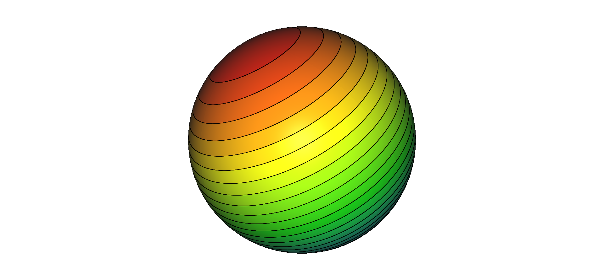

The donor (with density field) and receiver meshes.
Interpolated mesh with distributed pyTrees.
This tutorial demonstrates how to interpolate the field of a donor
mesh to a receiver mesh in a distributed context.
|
The donor (with density field) and receiver meshes. |
 Interpolated mesh with distributed pyTrees. |
Function P.extractMesh provides interpolation from one donor mesh to a receiver mesh.
In order to make interpolation process faster, it is possible to use it
in a distributed context on N processors.
First the case must be prepared. We suggest to over split the donor
mesh in 3*N parts and to split to the receiver mesh in N parts.
When this is done, Pmpi.extractMesh will only get the necessary blocks for interpolation
on one processor.
[Download case script].
[Download python script].